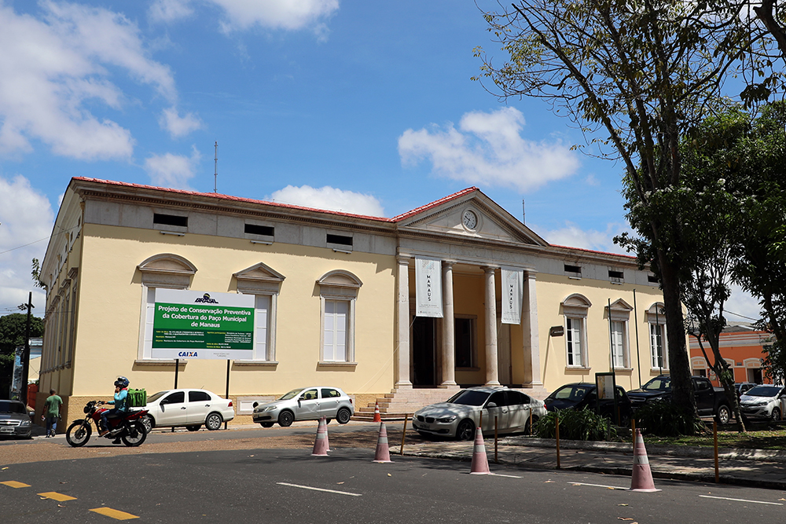

Manaus Global
Museu Municipal
O Museu da Cidade de Manaus, localizado no Paço da Liberdade, Centro Histórico, que durante décadas foi usado como sede do governo municipal, tornou-se a casa que conta a história do povo manauara. Reunindo beleza arquitetônica, exposições tecnológicas, peças arqueológicas e artigos regionais.
Oito salas do Museu da Cidade de Manaus retratam a vida cotidiana, a identidade e a cultura de gerações passadas, por meio de exposições de longa e curta duração, utilizando-se da interatividade para contar a história da cidade de Manaus a partir de textos, sons e imagens, com caráter educativo, lúdico e dinâmico e atraindo a atenção, o olhar e a sensibilidade até dos visitantes mais novos.
Salas como a “Afluentes do Tempo”, que projeta imagens a partir de um reflexo na água, que fica represada em uma espécie de bacia em formato de rio, encanta os visitantes. No espaço “Casas-Cabeças”, casas de diferentes habitantes da cidade são apresentadas em fotos em um painel touch screen. Já no “Banhos de Origens” é possível vivenciar o depoimento de pessoas de outras nacionalidades que vieram morar em Manaus.
O museu traz, ainda, a sala “Mercado”, com a exposição de iguarias, alimentos e objetos regionais que os feirantes vendiam nas feiras. O espaço “Rios Voadores” mostra a evaporação da água e o ciclo das chuvas na capital em quatro globos, enquanto a sala “Arqueologia” conta com apoio virtual. Na “Anéis de Crescimento” há uma projeção em dois pedaços de troncos e, por fim, a “Sala dos Prefeitos” mostra nomes, fotos e períodos de gestão de todos os prefeitos de Manaus.
O Museu da Cidade de Manaus foi criado pelo prefeito João de Mendonça Furtado, através da Lei n° 1.616, de 17 de junho de 1982, na estrutura da Secretaria Municipal de Educação e Cultura, com localização no prédio s/n° na rua da Instalação, mas nunca funcionou nessa localidade e sequer foi inaugurado.